Uzoechi
Adeniran
Victoria
Seasoned Film Production Manager with 10+ years of progressive experience delivering television, film, documentary and stage productions.
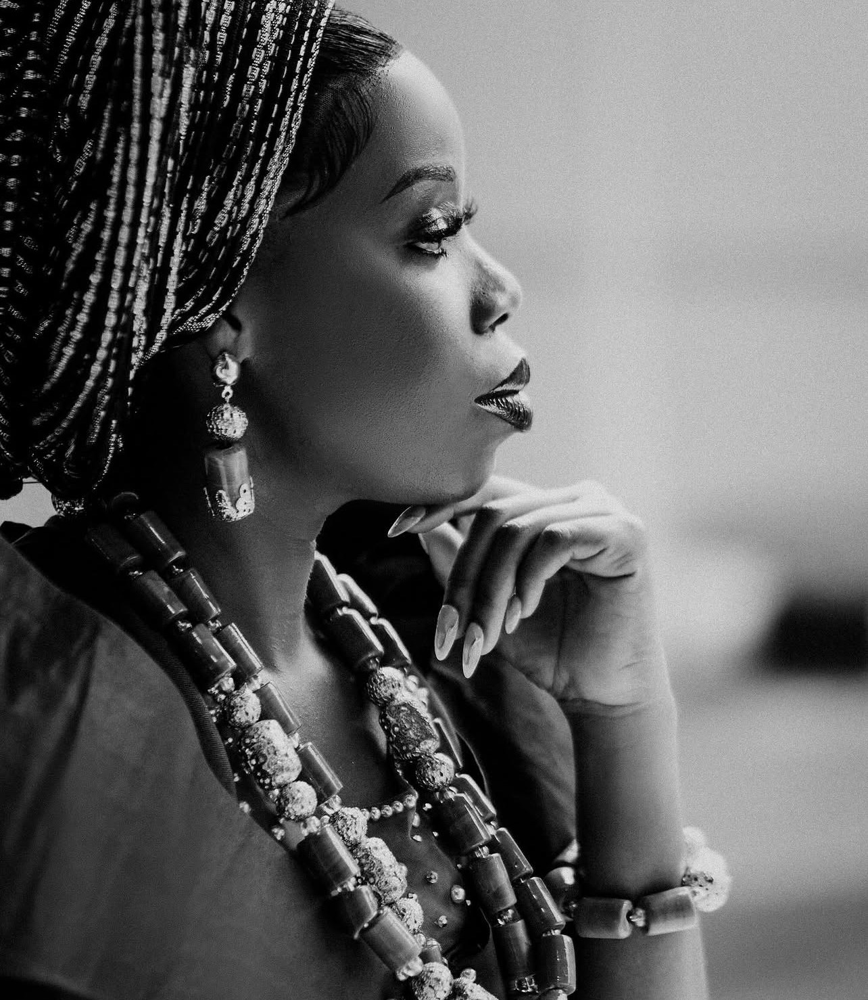
Production is where vision meets execution.
Uzoechi Adeniran Victoria is a seasoned Film Production Manager with over a decade of progressive experience in the Nigerian entertainment industry. She has worked across television series, feature films, documentaries and stage productions, with experience spanning production management, coordination, archiving, welfare, medicals, subtitling and transcription. Her production background includes work on projects associated with Africa Magic/MNet and Netflix, alongside independent film and documentary productions. She brings strengths in team leadership, crisis management, budget control, scheduling, logistics and end-to-end production coordination.
Experience
Film Production Manager / Archiver · Wura (Season 4 & 5)
Native Media, Lagos. Oversees day-to-day production operations, budgets, crew, vendors, schedules, call sheets, logistics, compliance, payroll/per diems and post-production handoff.
Film Production Manager · The Johnsons
Native Media, Lagos. Managed production operations, budgets, teams, scheduling, stakeholder communication, vendor negotiations, reporting and archiving.
Production Coordinator & Social Media Manager · The Johnsons
Native Media, Lagos. Coordinated a 65-person crew across 17 departments and supported delivery of 260 episodes, alongside social media and stakeholder management.
Production Secretary · Singing Tree Films
Supported planning, logistics, documentation, communication, subtitling/transcription and social media coordination.
Production Welfare & Medicals Coordinator · Singing Tree Films
Coordinated on-set welfare, first aid, safety audits, accommodations, transportation and confidential welfare concerns.
Production Assistant · Singing Tree Films
Supported day-to-day production operations, logistics and coordination.
Credits & productions
Series
Wura (Africa Magic) · Novara · Glass House · Italo · The Johnsons (Africa Magic/MNET) · Wura — Subtitles & Transcription · Mystic River (Netflix) · Penkelemess
Feature Films
Laraba World · Unspoken
Documentaries
Owode Yewa Town · Ford Foundation · MTN Lumos Light · Faaji Agba · Omode Meta
Stage
Ooni Luwo — Producer
What she brings to a production.
Victoria, in frame.
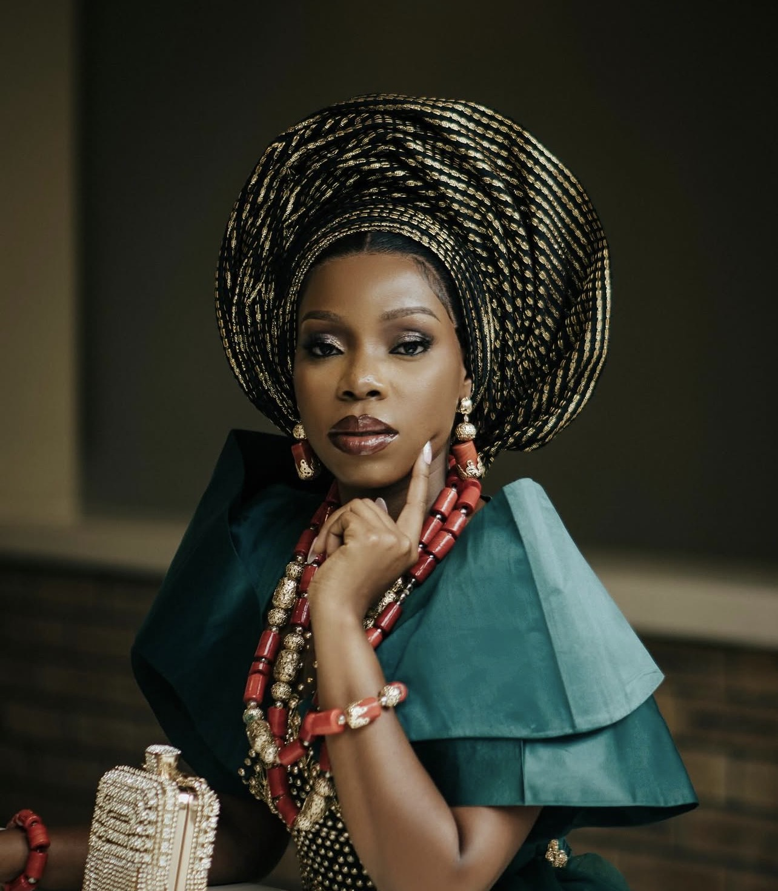
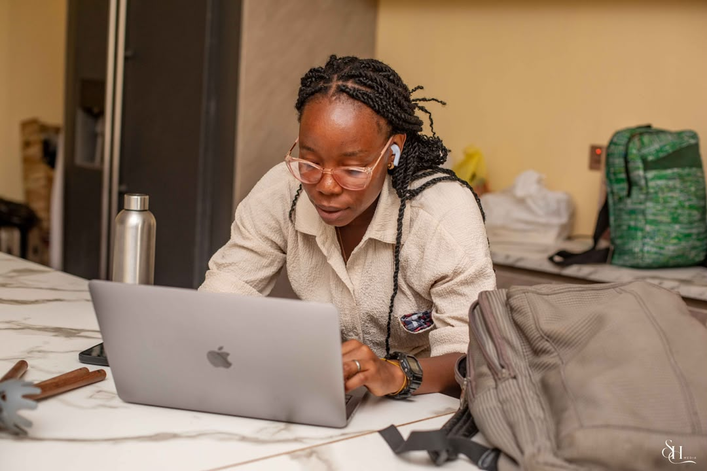
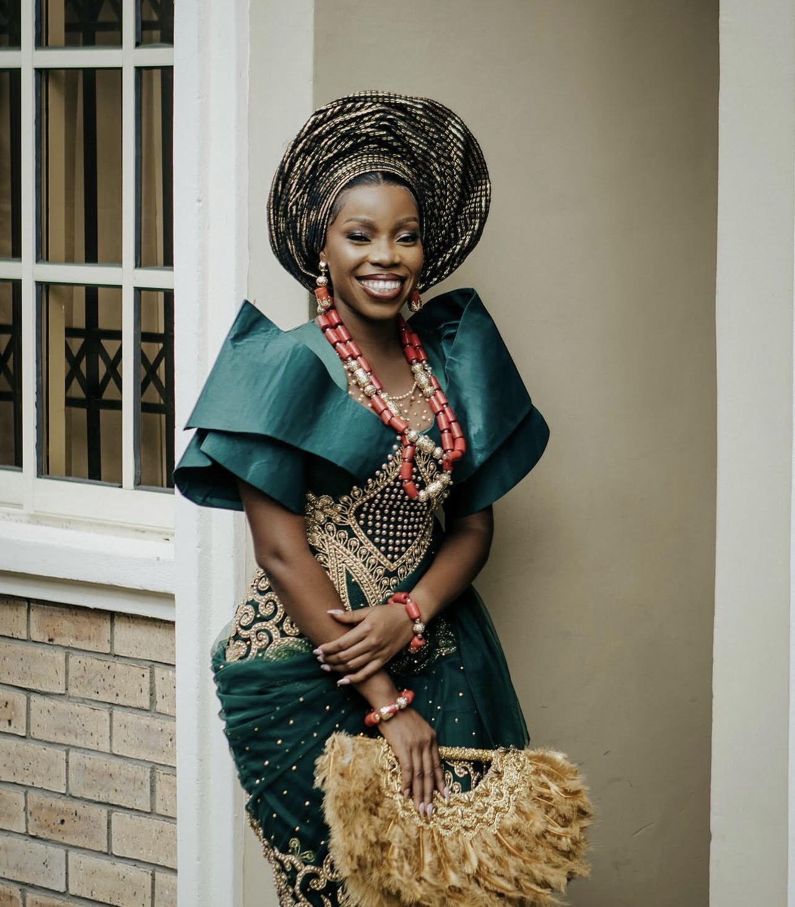
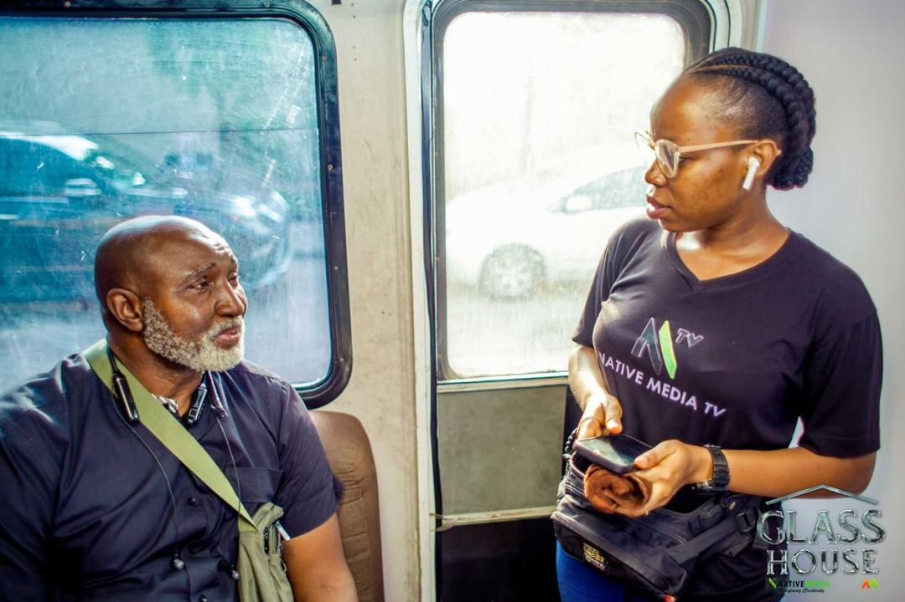
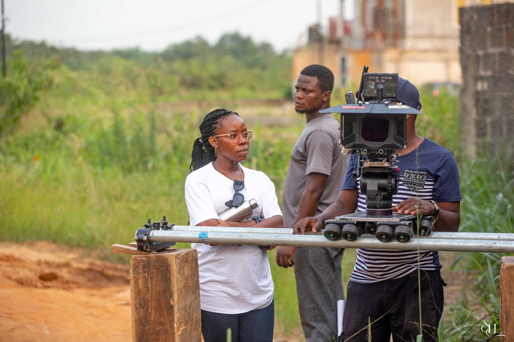
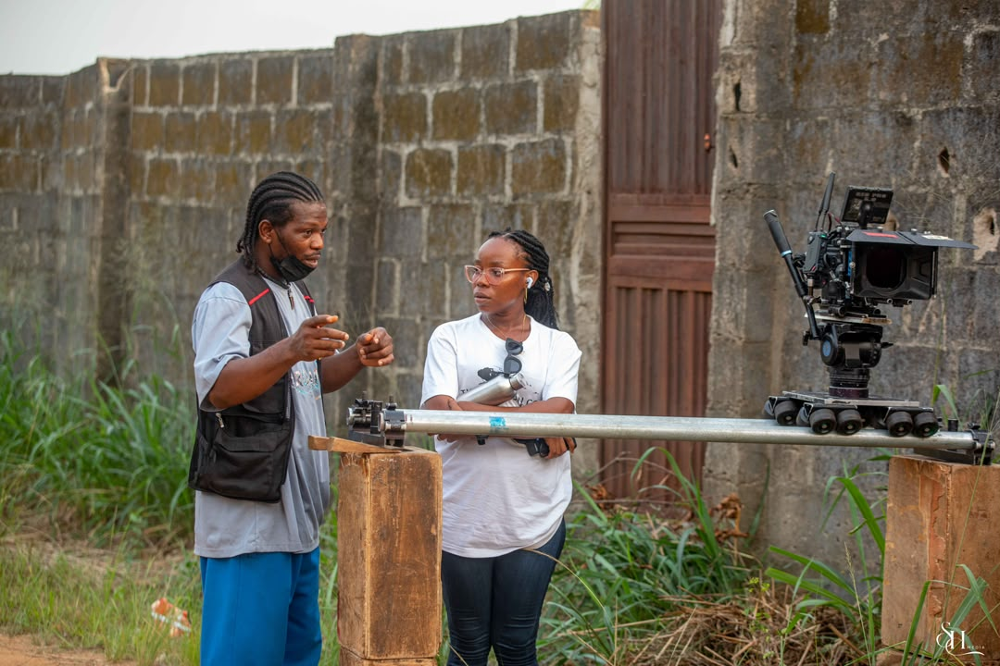
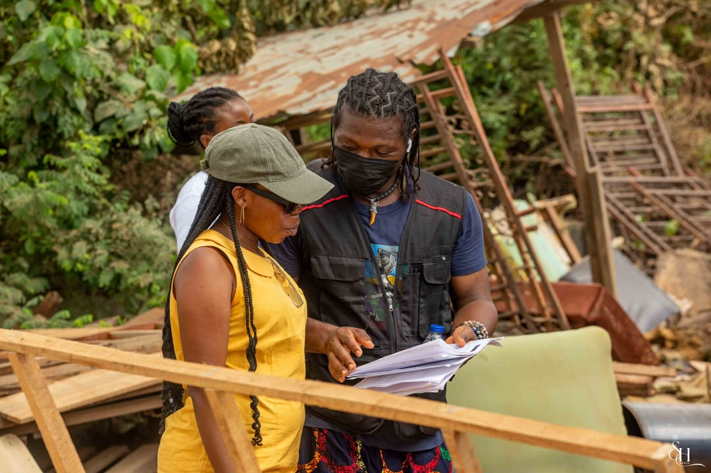
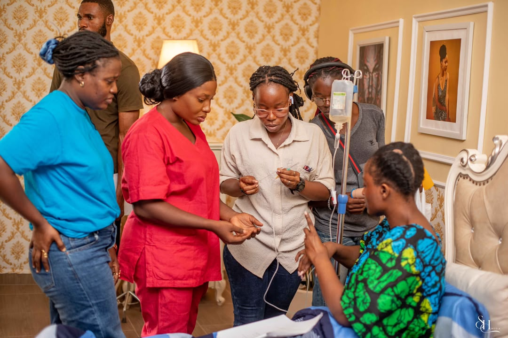
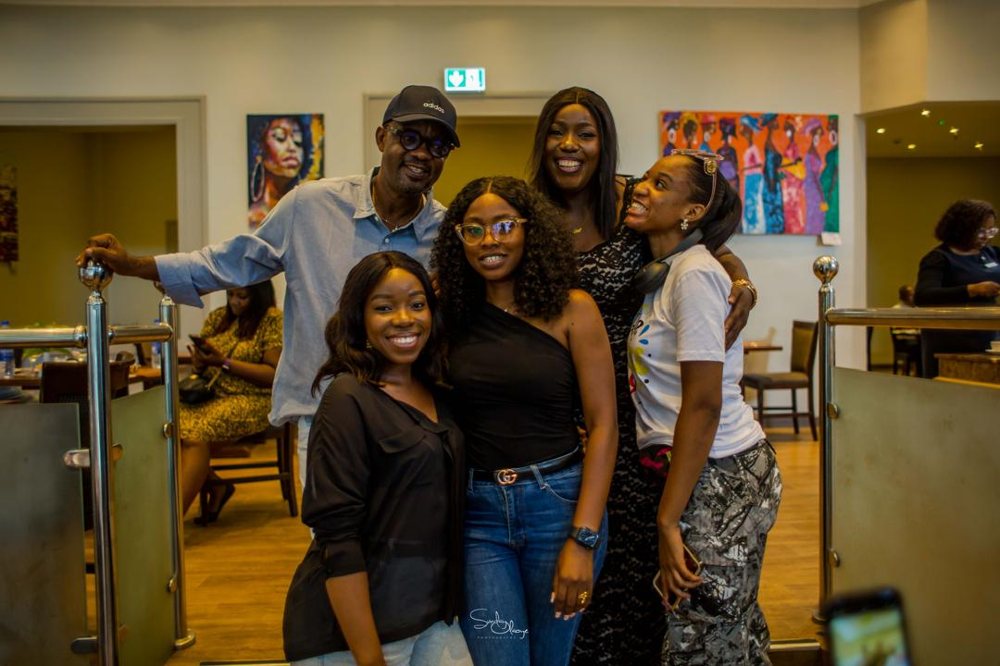
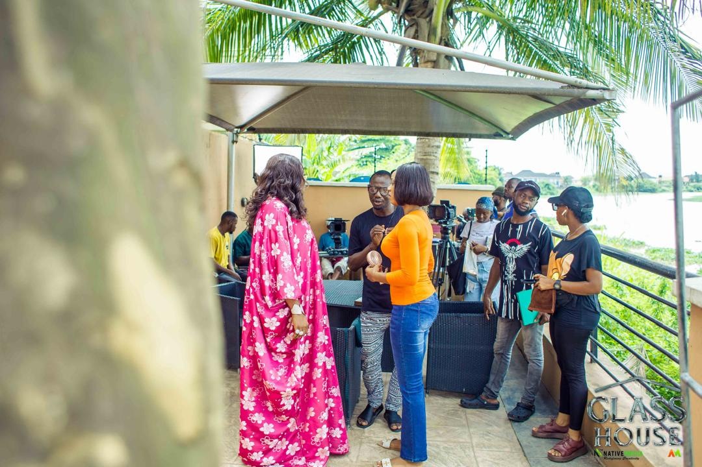
Education
Royal Film Academy, Lagos State
Diploma in Media and Film Production
2015
Muslim Girls’ High School, Ogun State
Senior School Leaving Certificate
2011
Training: Understanding and Preventing Sexual Harassment (Alison, 2024) · Project Planning & Management (Alison, 2024) · Working with Students with Special Educational Needs (Alison, 2023) · Beauty Therapy (TAOF Vocational Training Centre, 2018) · Makeup Artistry (Sololearn, 2016)
Work with Victoria.
For professional opportunities, production collaborations, speaking engagements or industry enquiries, connect through her social profiles.